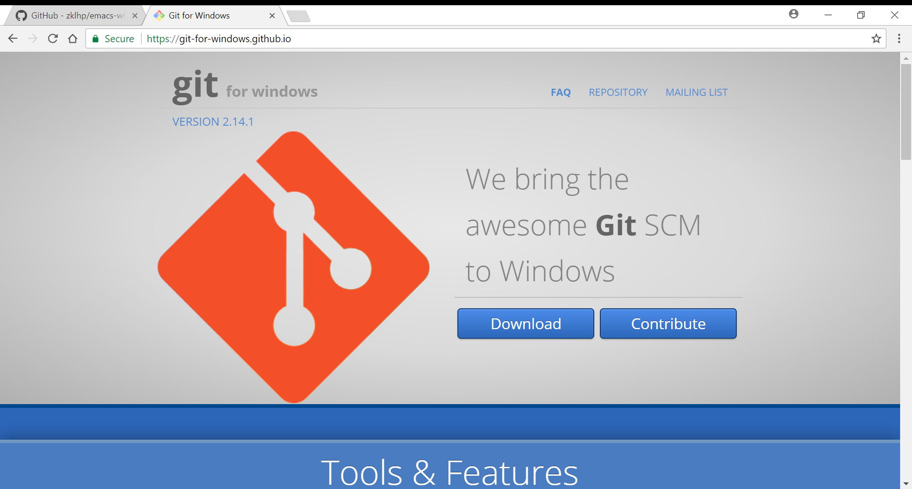
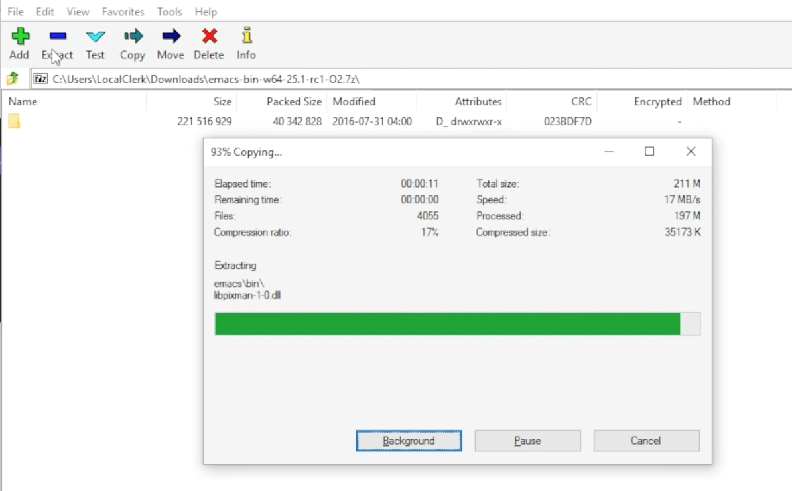
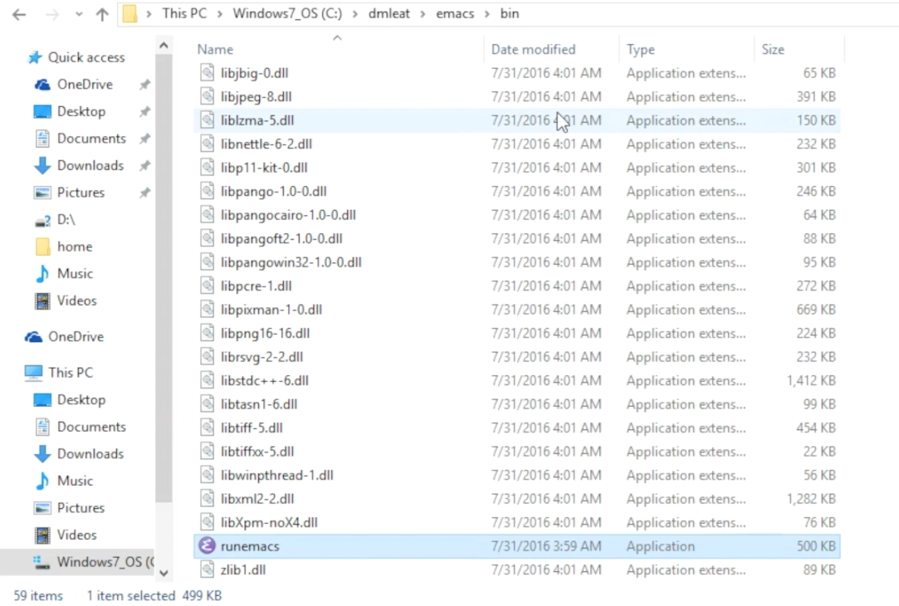
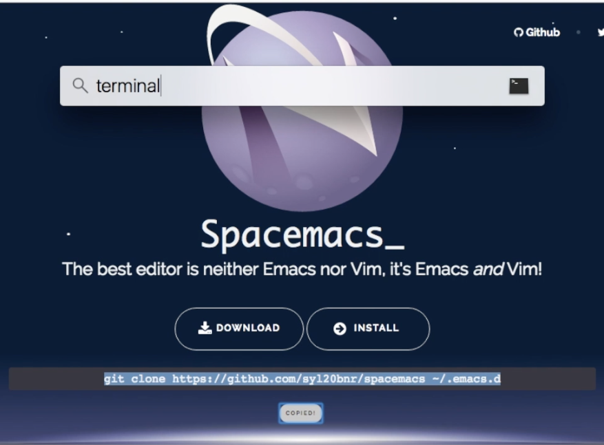

Index
Course
This is the Fall 2018 version of Discrete Mathematics I — AKA DM1 — AKA CS 237.
Syllabus
Catalog Description
What this course is about: Mathematics for computer science.
This course introduces the mathematical topics needed to provide a solid theoretical foundation for computer science. The following topics will be lightly covered:
- Sets and Logic
- Functions and Relations
- Combinatorics and Probability
- Number Theory and Practice
- Trees and Graphs
- Languages and Grammars
Objectives
- Know the basic terminology and operations of sets and logic, functions and relations, combinatorics and probability, number theory and practice, trees and graphs, and languages and grammars.
- Demonstrate logical reasoning through solving problems.
- Interpret the meaning of mathematical statements in the context of real-world applications.
- Think like a mathematician by making good connections.
- Learn basic functional programming by way of elisp, reading and writing elisp code.
Prerequisite
You must have successfully completed the following course:
- CS 165 Object-Oriented Software Development
Required Text
Metaphors Be With You: A Tireless Work on Play on Words
This is an online textbook. A print version will be made available on demand.
Requirements
You are required to…
- attend class and be actively engaged, as attendance and participation will enhance and quicken your and your peers’ learning.
- read assigned portions of the course materials before the class meeting when they will be discussed.
- take “prepare” before-class or in-class quizzes.
- do “teach one another” in-and-out-of-class exercises.
- do weekly “ponder and prove” assignments to deepen your understanding of selected topics.
- bring a laptop or other Internet-connectable (and tools-ready) device to each class meeting.
Assessments
There will be weekly “preparation assessment” quizzes that you will take before or during class. These will be on any current or previously discussed course content, to encourage steady knowledge accumulation and retention.
Assignments
Homework assignments are of three types: Exercises, Problems, and Puzzles.
Exercises
Exercises are individual and group learning activities that will require either a small amount of preparation before class, or participation during class, or both. Although time will be given during class, some time outside of class will also be required.
Problems
Problems are weightier, more challenging assignments that invite you to explore in more depth certain topics in discrete mathematics, as well as increase your lisp/functional programming prowess.
Puzzles
Puzzles are like problems, only with another added measure of difficulty that will require even more ingenuity, deep thought and persistent effort to solve. Think “Puzzle Room” — where you must solve a problem in order to escape from a room. But the hints are more obscure, and in fact the statement of the problem may be obscure, indirect or encoded somehow.
Grading
Grade Category Weighting
- Assignments: 70%
- Assessments: 30%
Grade Calculating
Your weighted percentage will determine your final grade in a reasonably standard way, with adjustments factored in in a to-be-revealed way.
Late Policy
Work is due as stated in the schedule. Late work is accepted only if the reason is extraordinary, and acceptance is reached through private and prolonged negotiation. And you must come talk to me in person — NOT by email, nor any other means of communication.
Schedule
Reading the book is a regular activity you are tasked with. There are three main sections and essentially three months (12 full weeks) in the semester. That’s one main section per month, or about one subsection every week. You are welcome to read ahead and work exercises/problems/puzzles at your own pace, but don’t get behind!
More details will be available in each week’s course files, but here’s an outline:
| Week | Reading | Exercises/Problems/Puzzles (EPPs) |
|---|---|---|
| 01 | <ABC | CRC DGZ CHJ DOK CJF DZB |
| 02 | ABC | OQP USV UCA ODS UGX OGR UWM OPZ UOX OTX UOT OIM UIN OJL UCG |
| OIO UIJ OQT UTQ OYU UOH OZD UZM OOY UFZ OKJ UVH OJM ULQ OTD | ||
| UJU OLH UWY OBW USL OYP UBV OKQ UKF OKL UEZ OYW UEF OUB UQY | ||
| 03 | DEF | TBD WDK TDR WDT TEH WFC TEJ WFK TER WGP TEU WGW TFV WJS TGE |
| WKC THP WKM TIW WNW TKG WOV TME WQW TMZ WRA TNL WRD TNQ WRP | ||
| TOJ WRU TOL WZO TOU WYH TLI WPI TSD WTM TTV WUZ WZM TUK WVQ | ||
| TUQ WVU TUW WWD TVL WWR TWN WWS TXG WZG TKH WUE | ||
| 04 | GHI | EBQ MGX ECI MHB ECT MKJ EFE MKL EFS MLB EJE MLU EJK MMC EJU |
| MNE EKQ MON | ||
| 05 | JKL | QAM REX QCV RFC QCZ RFF QDM RGL QEB RGM QFK RHB QGK RVB QGT |
| RJV QIQ RLH QKA RNC QKT RNM QOS ROP QRQ ROX | ||
| 06 | MNO | FAB ISM FBH ITT FDK IVO FDZ IWC FJH IWK FJY IXT FMD IYJ FOJ |
| IZL FOY VAO FQI VAR FQL VAY FQW VCR FRM VEM FUA VFJ FVF VGU | ||
| FVH VGX FXI VIB FYR VIW | ||
| 07 | PQR | GMQ JPZ GMY JQA GRZ JYA GXF XAJ GYI XFO |
| 08 | PQR | GYN XGG |
| 09 | STU | LDA SQI LJP SUF LNR YGT LDO YCF |
| 10 | STU | LUM YZU LTI YDQ LND YTR LGO YIV |
| 11 | VWX | HST KDB HTC KPS ABR KWD HRR KEO HMO HIJ KLE HAB KOV HBT AGA KNF |
| 12 | VWX | HJS HAX KHQ HKE KBB HRL AGD HSG KHO ANA HLX KSI HTR KSQ HBE KSC |
| 13 | YZ@ | BAO NCO PDQ NTC PTW NTM PMV NES BRZ BRE NGP BRQ PIQ PRK NIO |
| YZ@ | PFA BGT NGI NLR BSP NBO PBI BJO NKY BMI |
Tools
Regarding tools in general, here’s a thought by Howard Rheingold from his book, They Have A Word For It:
If you examine the beliefs of any master craftsman, you will discover a certain reverence for tools as worthy friends. The world-renowned Japanese temple carpenters, for example, spend much more time sharpening a tool than they spend making the cuts. The spirit of fine Japanese carpentry dictates that the planning and contemplation of a construction project should take much longer than the execution; in some cases, the carpenter lives on the site of a house or temple for at least a year, paying attention to the geography and the light, sharpening his tools, visualizing each cut, each piece of joinery, in his head, over and over again.
Any Computer Professional, no matter what specialty area he or she focuses on (science, engineering, technology, math), needs a good set of tools. The two main tool platforms are Windows and Mac. If you prefer Linux (or some other similar platform), you probably do not need any help provisioning your professional toolbox. Otherwise, select your preference and read on. Note that the tools you will need are few, but powerful! Note too that you must have a steady, reliable Internet connection (use the BYUI WiFi, not BYUI Visitor) to be successful.
Windows
64-bit only. If you do not have 64-bit Windows, please get it!
Git
[ ]Install Git for Windows: https://github.com/git-for-windows/git/releases/download/v2.15.1.windows.2/Git-2.15.1.2-64-bit.exe Or less directly, if you want to have a fuller experience, start at: https://git-for-windows.github.io [ ]Run the installer and click Next nine times to accept the defaults, and then click Install.[ ]Bring up the Windows Command Shell (cmd.exe) by pressing the “Windows” key (the one with the Windows logo on it) and, while holding that key down, typingRto open theRundialog and enteringcmd.[ ]Check that you have installed this tool correctly by entering the following command:
git
[ ]Make sure you see output that looks like usage instructions for the “git” command, and NOT an error message like
'git' is not recognized as an internal or external command ...
[ ]Leave this Command window open, as you will need it for entering the next command (see below).
Emacs
Set HOME Environment Variable
[ ]Enter the following command in the new Command window:
setx HOME "%USERPROFILE%"
[ ]Close this Command window and open a new one.[ ]Now enter the following command, and make sure it prints out the directory you were connected to when you first opened a Command window (which usually is something likeC:\Users\unamewhereunameis your user name).
echo %HOME%
[ ]Keep this Command window open, as you will need it for the Spacemacs installation steps (below).
Get 7-zip
[ ]Download the 7-zip installer executable at http://www.7-zip.org/a/7z1701-x64.exe[ ]Accept the default where to install.[ ]Close the installer.
Use 7-zip
[ ]Download the file from https://sourceforge.net/projects/emacsbinw64/files/latest/download[ ]This will land the installation fileemacs-w64-25.3-O2-with-modules.7zin your Downloads.[ ]Open it using 7-zip (specifically, the 7zFM executable), and extract it somewhere easy to find (like your HOME directory). It should look something like this:

[ ]Find therunemacsexecutable and make a shortcut to it, but DO NOT RUN IT YET!

Spacemacs
[ ]Enter the following command in the Command window, which you should have left opened (if not, see above for how to bring it back). Save typing by copying it to your clipboard from the box below, and then pasting it:
git clone https://github.com/syl20bnr/spacemacs .emacs.d
Beware that if you copy this from the Spacemacs home page (after pressing the “Install” button) there is a subtle difference that can trip you up. Before hitting Enter be sure to back up and remove the ~/ in front of the .emacs.d so that the command looks like the one above.
[ ]Enter the correct command, and then be patient, as it will take a few seconds to clone this large repository to your computer.[ ]Now to configure Spacemacs, enter this command in the same Command window:
git clone https://github.com/rickneff/firstthreeodds .spacemacs.d
[ ]Start up Emacs (use your shortcut) and the Spacemacs installation process will begin.[ ]Again, be patient, it’s downloading and installing over 100 packages.[ ]While you’re waiting, visit the Spacemacs home page and browse around: http://www.spacemacs.org
Mac
Homebrew
As stated at the Homebrew website, this is the “missing” package manager for
macOS. With it, you can easily install git (and other Xcode command-line
tools), emacs, all their dependencies, and more.
[ ]TypeCommand Spaceto bring up the Spotlight Search box and enterterminalto open a Terminal window.[ ]Enter this command in the Terminal window to install Homebrew:
/usr/bin/ruby -e "$(curl -fsSL https://raw.githubusercontent.com/Homebrew/install/master/install)"
Emacs
[ ]Enter these two “brew” commands in your Terminal window:
brew tap d12frosted/Emacs-plus brew install emacs-plus
[ ]You have installed Emacs — but DO NOT RUN IT YET![ ]Verify that your terminal output looks something like this saved output from when I installed emacs on my Macbook.
Spacemacs
[ ]Open or select a Terminal window.[ ]Enter the following command in the Terminal window. Save typing by copying it to your clipboard from the box below or from the Spacemacs home page, as shown in the following screenshot.
git clone https://github.com/syl20bnr/spacemacs ~/.emacs.d

[ ]Be patient, it will take a few seconds to clone this large repository to your computer.[ ]Now to configure Spacemacs, enter this command in the same Terminal window:
git clone https://github.com/rickneff/firstthreeodds ~/.spacemacs.d
[ ]Enter in your Terminal window:
emacs&
This will start up Emacs, and then the Spacemacs installation process will automatically begin.
[ ]Again, be patient, it’s downloading and installing over 100 packages.[ ]While you’re waiting, visit the Spacemacs home page and browse around: http://www.spacemacs.org
Helps
TODO Read the FAQs
Frequently Asked Questions (and their Answers):
- Q1
- Why can’t I find this course on I-Learn?
- A1
- This course on I-Learn will be made available on the first day of class.
- Q2
- The workload for this 2-credit class seems excessive. What should I do?
- A2
- Ponder the reasons you are taking this class. Are you striving to learn discrete math? Just here for the grade? Do you see yourself as a good reader, with good reading comprehension skills? A pitfall some of you will encounter is attempting the Exercises/Problems/Puzzles (EPPs for short) without good comprehension of the concepts you are asked to explore by way of these EPPs. Many exercises should take a few seconds, or a few minutes, maybe up to an hour or more for some of the problems (OQP for example) — if you are grasping what you are reading! If you read a sentence or a paragraph or a section, and then think to yourself, I have no idea what what I just read means — that’s a different kind of problem. Reading and understanding take time — is the time you spend doing this productive?
- Q3
- Okay, so I’m not the most skilled reader. It takes me a long time to read and digest things, especially when there are so many links to other things to read (and from them to still others). What do I do, settle for a poor grade? Drop the class?
- A3
- You are responsible for your learning. I as your teacher take seriously my role as and responsibility for being a helper, a facilitator of your learning — but I can’t make it happen. You can compensate for not (yet) being a skilled reader and problem solver, however.
- Q4
- How?
- A4
- Be inquisitive. Be very inquisitive! Ask questions, not just of me, but of your classmates. Share light and knowledge you gain on your own (or through talking with me or my TAs) freely, and appropriately with your peers!
- Q5
- Are we required to study in groups? I’m not a big fan of group work/think.
- A5
- What does the BYU-I Learning Model say about “Teach One Another”? Are you a non-fan because of past experience, where you were let down by members of your group? Were you assigned this group, or was it self-selected?
- Q6
- Yes, and it was assigned. Are you suggesting I should choose my own group to study with?
- A6
- Yes, most assuredly and emphatically YES!
- Q7
- What do you mean by appropriately sharing with my peers?
- A7
- Good sharing and collaboration is a “me lift thee and thee lift me, and we both ascend together” phenomenon. Bad sharing/collaboration is copying someone else’s work and submitting it as your own, to get “credit” for doing some assigned task, while not getting the understanding doing the task was meant to give you.
- Q8
- Are there any tutors for this class?
- A8
- Yes, but not through the Tutoring Center. They will be introduced to you soon.